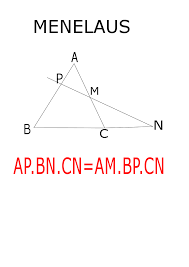
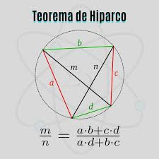
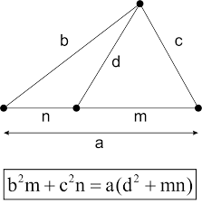

Teorema de Menelaus
Esse teorema é muito util quando se tem um triangulo e uma reta qualquer que se encontra na prolongação da base do triangulo em um ponto qualquer, usado para descobrir o tamanho dos lados que são formados nessas divisões
Teorema de Hiparco
Um teorema lindo de se usar quando se tem um quadrilatero inscrito de uma circuferencia, descobrindo uma relação entre os lados e suas diagonais para que cumpra as restrições para ser inscrito a uma circuferencia.
Teorema de Stewart
Stewart nesse teorema faz uma relação entre uma reta qualquer que sai do vertice e vai até o lado oposto ao vertice de origem, separando o lado em duas partes, pode ser utilizado para descobrir os lados quando se tem o valor da reta ou até mesmo descobrir a reta quando se tem os lados.